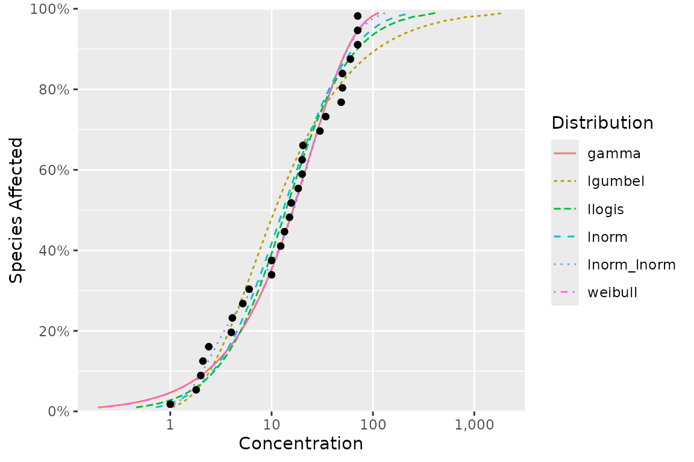
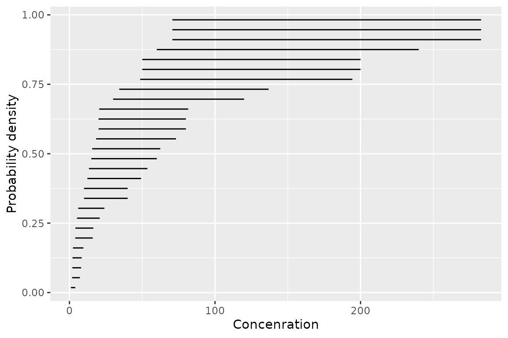
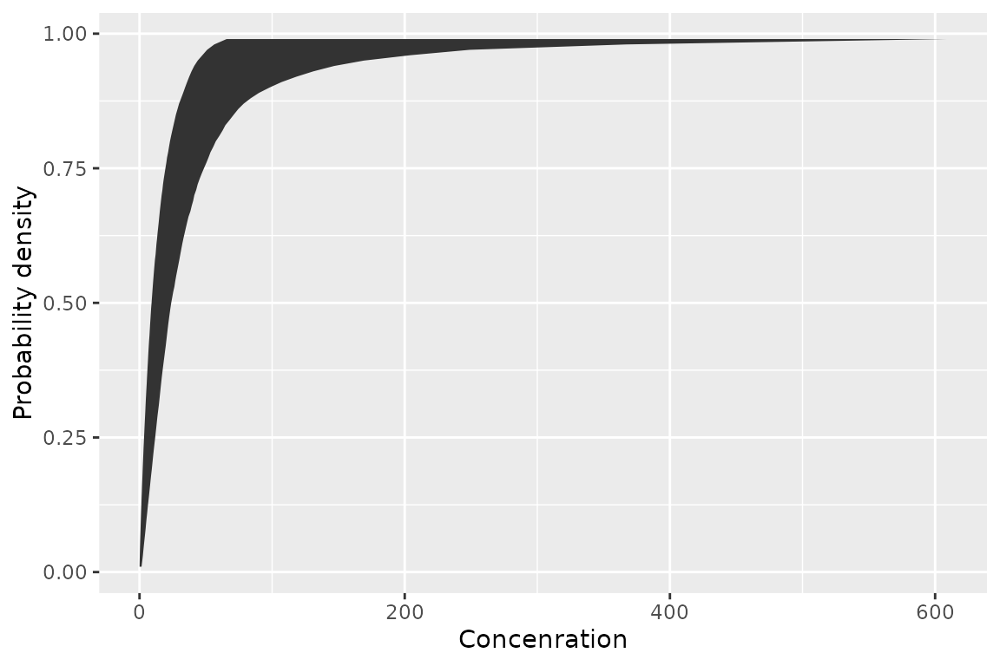

Customising Plots
ssdtools Team
2024-05-16
Source:vignettes/customising-plots.Rmd
customising-plots.RmdPlotting the cumulative distribution
The ssdtools package produces a plot of the cumulative
distribution functions for the multiple input distributions through the
use of the ssd_plot_cdf() function. For example, consider
the boron data. We can fit, and then plot the cdf using:
library(ggplot2)
library(ssdtools)
fits <- ssd_fit_dists(ssddata::ccme_boron)
gp <- ssd_plot_cdf(fits)
print(gp)This graphic is a ggplot object and so can be saved and embellished in the usual way.
Customising the cumulative distribution plot
Plot the model-averaged fit with individual fits
We can add the model-averaged cdf by first obtaining predicted values, and extending the default ssdtools ggplot in the usual way using geom_line:
library(ssddata)
library(ssdtools)
library(ggplot2)
dist <- ssdtools::ssd_fit_dists(ssddata::ccme_boron)
pred <- predict(dist, ci = FALSE)
boron_hc5 <- ssd_hc(dist)
ssdtools::ssd_plot_cdf(dist) +
geom_line(data = pred, aes(x = est, y = proportion, colour = "Model average", lty = "Model average"), lwd = 0.75) +
scale_linetype_manual(name = "Distribution", breaks = c("Model average", names(dist)), values = 1:7) +
scale_color_manual(name = "Distribution", breaks = c("Model average", names(dist)), values = 1:7) +
theme_bw()
Other customisations
The ssdtools package provides four ggplot geoms to allow
you construct your own plots.
The first is geom_ssdpoint() which plots species
sensitivity data
ggplot(ccme_boron) +
geom_ssdpoint(aes(x = Conc)) +
ylab("Probability density") +
xlab("Concenration")
The second is geom_ssdsegments() which plots the range
of censored species sensitivity data
ggplot(ccme_boron) +
geom_ssdsegment(aes(x = Conc, xend = Conc * 2)) +
ylab("Probability density") +
xlab("Concenration")The third is geom_xribbon() which plots species
sensitivity confidence intervals
ggplot(boron_pred) +
geom_xribbon(aes(xmin = lcl, xmax = ucl, y = proportion)) +
ylab("Probability density") +
xlab("Concenration")
And the fourth is geom_hcintersect() which plots hazard
concentrations
ggplot() +
geom_hcintersect(xintercept = c(1, 2, 3), yintercept = c(0.05, 0.1, 0.2)) +
ylab("Probability density") +
xlab("Concenration")
They can be combined together as follows
gp <- ggplot(boron_pred, aes(x = est)) +
geom_xribbon(aes(xmin = lcl, xmax = ucl, y = proportion), alpha = 0.2) +
geom_line(aes(y = proportion)) +
geom_ssdsegment(data = ccme_boron, aes(x = Conc / 2, xend = Conc * 2)) +
geom_ssdpoint(data = ccme_boron, aes(x = Conc / 2)) +
geom_ssdpoint(data = ccme_boron, aes(x = Conc * 2)) +
scale_y_continuous("Species Affected (%)", labels = scales::percent) +
expand_limits(y = c(0, 1)) +
xlab("Concentration (mg/L)")
print(gp + geom_hcintersect(xintercept = boron_hc5$est, yintercept = 5 / 100))
To log the x-axis add the following code.
gp <- gp + coord_trans(x = "log10") +
scale_x_continuous(
breaks = scales::trans_breaks("log10", function(x) 10^x),
labels = comma_signif
)
print(gp + geom_hcintersect(xintercept = boron_hc5$est, yintercept = 0.05))
The most recent plot can be saved as a file using
ggsave(), which also allows the user to set the
resolution.
ggsave("file_name.png", dpi = 600)Fitting and plotting distributions to multiple groups such taxa and/or chemicals
An elegant approach using some tidyverse packages is demonstrated below.
library(ssddata)
library(ssdtools)
library(ggplot2)
library(dplyr)
library(tidyr)
library(purrr)
boron_preds <- nest(ccme_boron, data = c(Chemical, Species, Conc, Units)) %>%
mutate(
Fit = map(data, ssd_fit_dists, dists = "lnorm"),
Prediction = map(Fit, predict)
) %>%
unnest(Prediction)The resultant data and predictions can then be plotted as follows.
library(ssdtools)
library(ssddata)
ssd_plot(ccme_boron, boron_preds, xlab = "Concentration (mg/L)", ci = FALSE) +
facet_wrap(~Group)Embellishing Plots with an Exposure Distribution
For example, suppose we want to superimpose an environmental concentration cumulative distribution and compute the exposure risk as outlined in Verdonck et al. (2003).
Finding a suitable probability distribution to describe the exposure concentration is beyond the scope of this document – we will assume that this has been done elsewhere. In particular, suppose that the exposure concentration follows a log-normal distribution with a mean of -2.3 and a standard deviation of 1 on the logarithmic scale. From the exposure distribution, we construct a data frame with the concentration values and the cumulative probability of seeing this exposure or less in the environment.
Notice that some care is needed because the ssdtools plot is on the logarithmic base 10 scale and not the natural logarithm base \(e\) scale.
ex.cdf <- data.frame(Conc = exp(seq(log(.01), log(10), .1))) # generate a grid of concentrations
ex.cdf$ex.cdf <- plnorm(ex.cdf$Conc,
meanlog = ex.mean.log,
sdlog = ex.sd.log
) # generate the cdfWe now add this to the plot
gp +
geom_line(data = ex.cdf, aes(x = Conc, y = ex.cdf), color = "red", linewidth = 2) +
annotate("text",
label = paste("Exposure distribution"),
x = 1.08 * ex.cdf$Conc[which.max(ex.cdf$ex.cdf > 0.5)], y = 0.5, angle = 75
)The ssdtools package contains a function
ssd_exposure() that computes the risk as defined by
Verdonck et al (2003) representing the average proportion of species at
risk.
set.seed(99)
ex.risk <- ssd_exposure(fits, meanlog = ex.mean.log, sdlog = ex.sd.log)
ex.risk## [1] 0.0062416The risk of 0.00624 can also be added to the plot in the usual way:
gp +
geom_line(dat = ex.cdf, aes(x = Conc, y = ex.cdf), color = "red", linewidth = 2) +
annotate("text",
label = paste("Exposure distribution"),
x = 1.08 * ex.cdf$Conc[which.max(ex.cdf$ex.cdf > 0.5)], y = 0.5, angle = 75
) +
annotate("text",
label = paste("Verdonck risk :", round(ex.risk, 5)),
x = Inf, y = 0, hjust = 1.1, vjust = -.5
)References
Licensing
Copyright 2018-2024 Province of British Columbia
Copyright 2021 Environment and Climate Change Canada
Copyright 2023-2024 Australian Government Department of Climate Change,
Energy, the Environment and Water
The documentation is released under the CC BY 4.0 License
The code is released under the Apache License 2.0